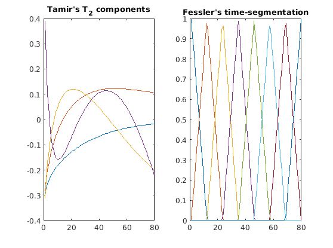
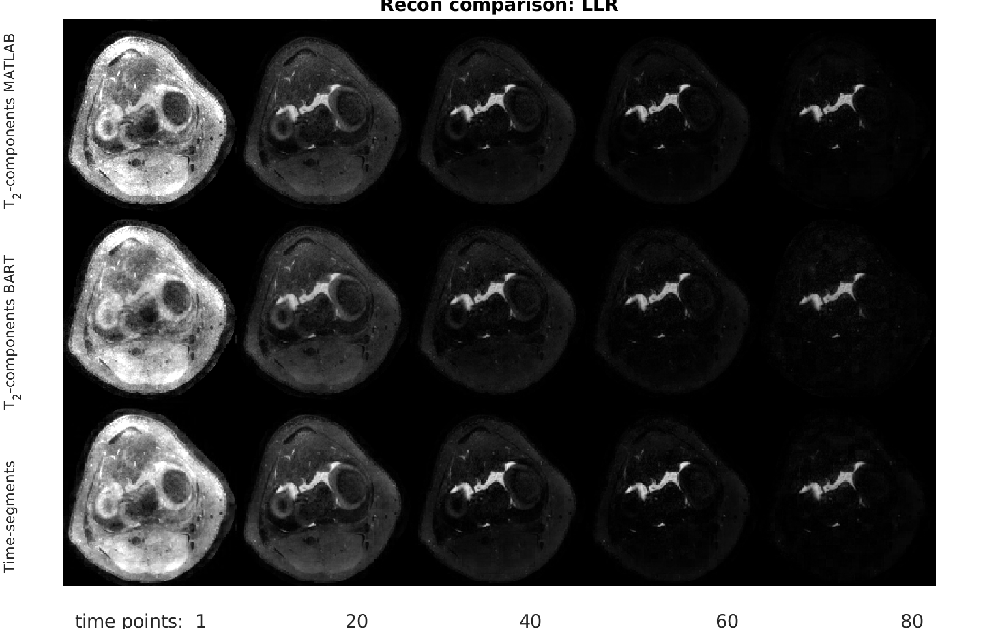

Time-segmentation for t2-shuffling
Let's see.
Contents
Now as time-segmentation
The t2-shuffling approach can be easily modified to using other components.
One option is the pretty universal time segments:
nEchos=size(Phi,1); nTS=8; TSB=GetTSCoeffsByLinear(nEchos,nTS); figure;subplot(1,2,1);plot(Phi);title("Tamir's T_2 components"); subplot(1,2,2);plot(TSB);title("Fessler's time-segmentation");
Plugging the time-segments as the components:
PhiP_TS=permute(TSB,[3 4 5 6 7 1 2]); % 1 1 1 1 1 80 10 PT_TS=sum(masks.*permute(TSB,[3 4 5 1 2]),6); TPT1_TS=sum(PT_TS.*permute(TSB',[3 4 5 2 6 1]),4); TPT1p_TS=permute(TPT1_TS,[1 2 3 5 6 4]); ET_TS=permute(eye(nTS),[3:8 1 2]); % 1 1 1 1 1 1 10 10 TPT1pBart_TS=permute(TPT1p_TS,[1 2 3 6 7 8 4 5]); % 260 240 1 1 1 1 10 10 WarmStartZeros_TS=zeros([260 240 1 1 1 1 nTS]); WarmStartZerosFN_TS=[BaseFolder 'T2ShflZ_TS']; writecfl(WarmStartZerosFN_TS,WarmStartZeros_TS); ScriptsPart_TS=[' -W ' WarmStartZerosFN_TS ' -Q ' T2ShflScriptFN_FPart ' -M ' T2ShflScriptFN_NPart ' ' T2ShflScriptFN]; disp('Prepared for TS');
Prepared for TS
% calling recon % LambdaWTS=30; RhoTS=10000; LLR_Lambda=30; out_TSc=bart(['picsS -m -b 10 -u ' num2str(RhoTS) ' -R W:3:64:' num2str(LambdaWTS) ' -R L:3:3:' num2str(LLR_Lambda) ' ' ScriptsPart_TS],kspP,SensP,masksP,PhiP_TS,TPT1pBart_TS,ET_TS);
Warm start: Starting with [260 240 1 1 1 1 8 1 1 1 1 1 1 1 1 1 ] main_picsS Reading files Reading /tmp/tpd95cd563_e220_47b7_93e8_398e6543fd61in1: 260 240 1 8 1 80 1 1 1 1 1 1 1 1 1 1 Reading /tmp/tpd95cd563_e220_47b7_93e8_398e6543fd61in2: 260 240 1 8 1 1 1 1 1 1 1 1 1 1 1 1 Reading /tmp/tpd95cd563_e220_47b7_93e8_398e6543fd61in3: 260 240 1 1 1 80 1 1 1 1 1 1 1 1 1 1 Reading /tmp/tpd95cd563_e220_47b7_93e8_398e6543fd61in4: 1 1 1 1 1 80 8 1 1 1 1 1 1 1 1 1 Reading /tmp/tpd95cd563_e220_47b7_93e8_398e6543fd61in5: 260 240 1 1 1 1 8 8 1 1 1 1 1 1 1 1 Reading /tmp/tpd95cd563_e220_47b7_93e8_398e6543fd61in6: 1 1 1 1 1 1 8 8 1 1 1 1 1 1 1 1 Finished reading files Warm start: CurDims:[260 240 1 1 1 1 8 1 1 1 1 1 1 1 1 1 ] CurDims:[260 240 1 1 1 1 8 1 1 1 1 1 1 1 1 1 ] # File 0 is k-space data, file 1 is sensitivity maps, 2 is sampling pattern # File 3 is components: Phi # PRINT 52 Adding: FMAC with file #1 squash flag 0 Adding: FFT with flag 3 Adding: FMAC with file #3 squash flag 64 Adding: FMAC with file #2 squash flag 0 # PRINT 5 Read forward script. dimsAfterF:[260 240 1 8 1 80 1 1 1 1 1 1 1 1 1 1 ] # Forward part of Normal operator: # File 0 is k-space data, file 1 is sensitivity maps, 2 is sampling pattern # File 3 is components: Phi # File 4 is TPT, File 5 is ET Adding: FMAC with file #1 squash flag 0 Adding: FFT with flag 3 # File 0 is k-space data, file 1 is sensitivity maps, 2 is sampling pattern # File 3 is components: Phi # File 4 is TPT, File 5 is ET Adding: FMAC with file #4 squash flag 64 Adding: FMAC with file #5 squash flag 128 OK linop script reading Inverse scaling of the data: 15074.718750 Preparing prox funcs l1-wavelet regularization: 30.000000 lowrank regularization: 30.000000 ADMM Preparing operator sense_recon_create sense_recon_create pattern Now applying itop_apply!! Now freeing Total Time: 37.450618 Clearing files' memory Clearing /tmp/tpd95cd563_e220_47b7_93e8_398e6543fd61in1 Clearing /tmp/tpd95cd563_e220_47b7_93e8_398e6543fd61in2 Clearing /tmp/tpd95cd563_e220_47b7_93e8_398e6543fd61in3 Clearing /tmp/tpd95cd563_e220_47b7_93e8_398e6543fd61in4 Clearing /tmp/tpd95cd563_e220_47b7_93e8_398e6543fd61in5 Clearing /tmp/tpd95cd563_e220_47b7_93e8_398e6543fd61in6 Finished Clearing files' memory Size: 260 240 1 1 1 1 8
Comparison:
Unfold all time-points for the T2-components and for the time-segmentation:
imMatlab = T_for(squeeze(alpha)); imBartT2 = T_for(squeeze(RecT2Shf2)); T_for_TS = @(a) temporal_forward(a, TSB); imBartTS = T_for_TS(squeeze(out_TSc)); ShowIdxs=floor(linspace(1,80,5)); BFac=grmss(imMatlab(:,:,ShowIdxs))/grmss(imBartT2(:,:,ShowIdxs)); AFac=grmss(imMatlab(:,:,ShowIdxs))/grmss(imBartTS(:,:,ShowIdxs)); fgmontage(cat(4,imMatlab(:,:,ShowIdxs),imBartT2(:,:,ShowIdxs)*BFac,imBartTS(:,:,ShowIdxs)*AFac)); title('Recon comparison: LLR','FontSize',20); ylabel('Time-segments T_2-components BART T_2-components MATLAB','FontSize',16); xlabel('time points: 1 20 40 60 80','FontSize',20);
Warning: Showing abs
Summary
Can't say what's better, especially without ground-truth.
However, Time-segments are universal; did not need to prepare the components according to the FSE flip angle scheme; and most importantly, are much more robust to deal with field inhomogeneity.